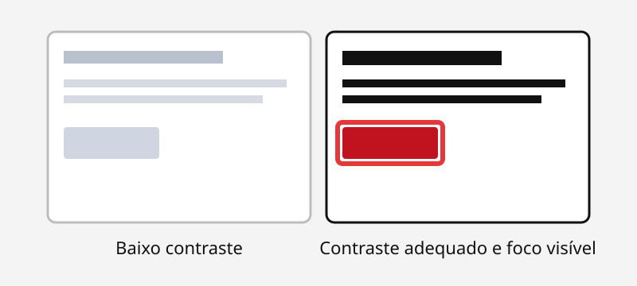

Acessibilidade digital: a internet também tem calçadas
Pagar uma conta, marcar uma consulta ou estudar acontece cada vez mais pela tela. Um site mal construído pode ser uma barreira tão real quanto uma escada.

Como diferentes pessoas usam a web
Pessoas cegas costumam usar leitores de tela, programas que transformam o conteúdo em voz sintetizada ou em braille, como NVDA, JAWS e o VoiceOver dos aparelhos da Apple. Quem tem pouca mobilidade nas mãos pode navegar apenas pelo teclado, por comandos de voz ou por acionadores. Pessoas com baixa visão ampliam a tela e dependem de bom contraste. Pessoas surdas precisam de legendas e, muitas vezes, de conteúdo em Libras.
Em todos esses casos, o site só funciona se for construído de forma que essas tecnologias consigam entendê-lo.
As diretrizes WCAG e o eMAG
As WCAG, Diretrizes de Acessibilidade para Conteúdo Web, são publicadas pelo W3C, o consórcio que define os padrões da web. A versão 2.2 foi publicada em 2023. Elas se organizam em quatro princípios:
- Perceptível
- A informação precisa chegar por pelo menos um sentido que a pessoa use: imagens têm texto alternativo, vídeos têm legenda.
- Operável
- Tudo pode ser feito pelo teclado, sem limite de tempo apertado e sem conteúdo que pisque de forma perigosa.
- Compreensível
- Textos claros, navegação previsível e formulários que explicam os erros.
- Robusto
- O código segue os padrões, para funcionar em diferentes navegadores e tecnologias assistivas.
No Brasil, o governo federal publica o eMAG, que adapta essas recomendações aos sites públicos. É dele que vem, por exemplo, o padrão de atalhos de teclado numerados que você encontra no topo deste site.
Erros mais comuns e como evitar
| Problema | Quem é afetado | Como resolver |
|---|---|---|
| Texto com pouco contraste | Baixa visão, daltonismo, quem usa celular no sol | Contraste mínimo de 4,5:1 para texto comum |
| Imagem sem texto alternativo | Pessoas cegas | Atributo alt descrevendo a função da imagem |
| Campo de formulário sem rótulo | Usuários de leitor de tela | Elemento label ligado ao campo |
| Link escrito só “clique aqui” | Quem navega pela lista de links | Texto que diga para onde o link leva |
| Foco de teclado invisível | Quem não usa mouse | Manter ou criar um contorno de foco bem visível |
Teste você mesmo
Uma forma simples de sentir a experiência é tentar usar um site apenas com o teclado. Use Tab para avançar, Shift + Tab para voltar e Enter para ativar links e botões. Se você se perder, não souber onde está o foco ou não conseguir chegar a algum botão, o site tem um problema de acessibilidade.
Experimente também o leitor de tela do seu computador
No Windows, o Narrador é ativado com Ctrl + Windows + Enter. No macOS, o VoiceOver é ativado com Command + F5. O NVDA é um leitor de tela gratuito para Windows, muito usado no Brasil.